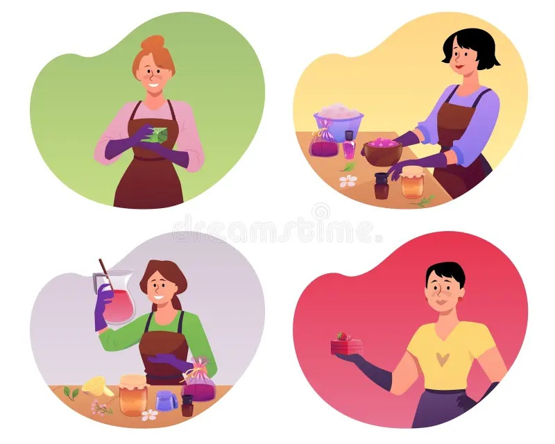
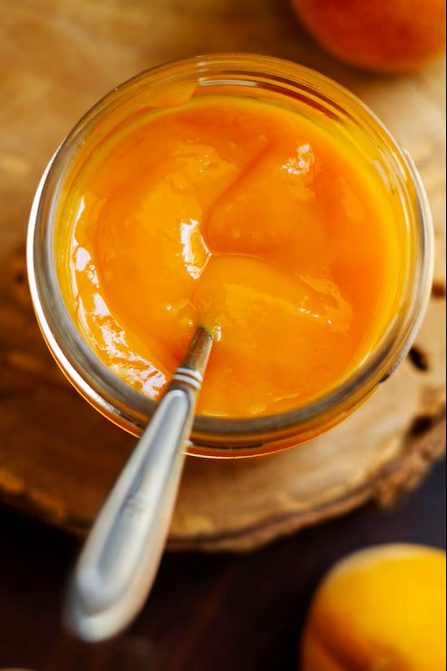
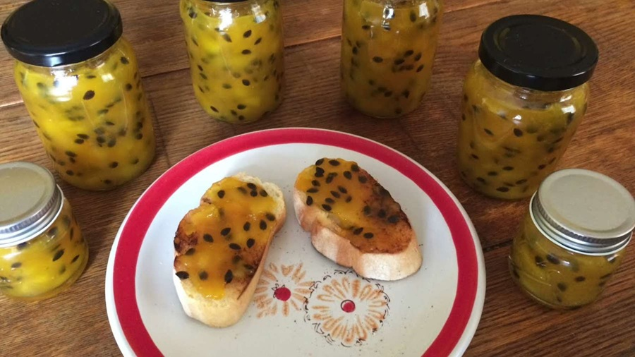

Conoce las metas principales que orientan el desarrollo de nuestros productos naturales elaborados a base de maracuyá.
Desarrollar y ofrecer productos naturales derivados del maracuyá, destacando la elaboración de jalea natural de calidad, mediante procesos adecuados que permitan satisfacer las necesidades de los consumidores y promover una alternativa alimenticia con valor agregado.
Metas planteadas para fortalecer el desarrollo de nuestros productos naturales.

Desarrollar productos derivados del maracuyá mediante procesos adecuados que permitan conservar su sabor y calidad natural.

Ofrecer productos que cumplan con características de calidad, sabor y presentación para brindar confianza a los consumidores.
Crear productos que respondan a las preferencias y necesidades de los consumidores mediante una propuesta natural e innovadora.

Crear nuevas alternativas elaboradas a base de maracuyá que permitan ampliar la variedad de productos ofrecidos.
Cada objetivo representa el compromiso de desarrollar una propuesta enfocada en productos naturales, calidad y satisfacción del consumidor.